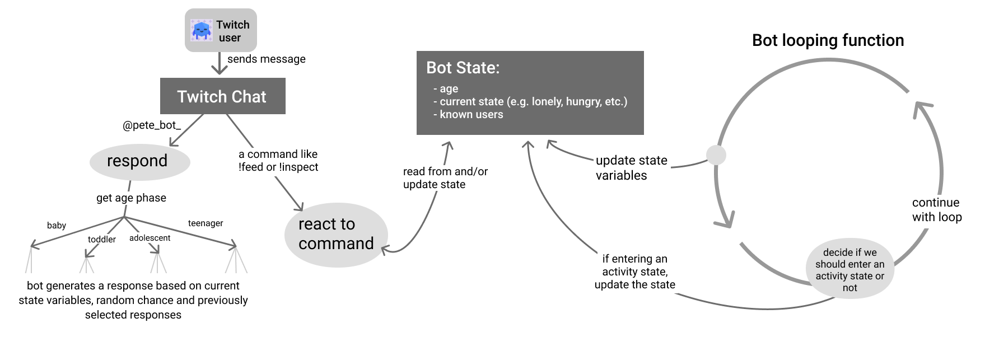

Concept
As a research assistant in Oh!Lab at Carnegie Mellon, I collaborated with Joseph Seering and Michal Luria to design and program a "Baby" chatbot that was designed to interact with a community and grow up over time. Professors Jessica Hammer and Geoff Kaufmann advised on the project and final paper.

Our work builds on a previous paper published by Joseph, Michal, Geoff Kaufman and Jessica Hammer. That paper notes that many current chatbots are designed for one-on-one interactions and argues that:
"chatbots' social roles and conversational capabilities beyond dyadic interactions have been underexplored, and that expansion into this design space could support richer social interactions in online communities and help address the longstanding challenges of maintaining, moderating, and growing these communities."
Process
Initial mockups
Focusing in on the "dependent" chatbot suggested by the above paper, I designed many different chatbot concepts, iterated on these concepts and narrowed in onto one type of bot.
Second iteration of refined mockups & user journey
Flow diagrams

Development
Once we had designed all of the features of Babybot, I then programmed the bot. The chatbot used in this study was developed using Javascript and run locally using Node.js. Package management was handled through npm. We are using several javascript libraries for Twitch relaying, data saving and language generation; notably, we are using tmi.js (v1.4.2) to access Twitch’s Internet Relay Chat, and Rita.js (v1.3.89) to perform natural language processing on our text.

For more information about the implementation, study and final insights, please see our paper.
Link to paper
Abstract
"While the majority of research in chatbot design has focused on creating chatbots that engage with users one-on-one, less work has focused on the design of conversational agents for online communities. In this paper we present results from a three week test of a social chatbot in an established online community. During this study, the chatbot "grew up" from "birth" through its teenage years, engaging with community members and "learning" vocabulary from their conversations. We discuss the design of this chatbot, how users' interactions with it evolved over the course of the study, and how it impacted the community as a whole. We discuss how we addressed challenges in developing a chatbot whose vocabulary could be shaped by users, and conclude with implications for the role of machine learning in social interactions in online communities and potential future directions for design of community-based chatbots."